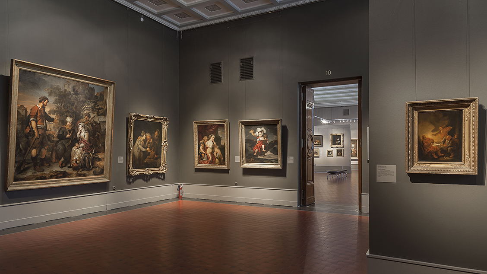

ALENA
About the cultural event
Titian
Eleven paintings from Italian museums are presented at the exhibition in the Pushkin State Museum of Fine Arts in Moscow. The exhibition of works by Titian will be one of the highlights of 2013. The great master of the Renaissance, Titian Vecellio (1488/1490 – 1576), has entered the history of world painting as an outstanding colorist, the founder of the genre of psychological portraiture, a reformer of religious and historical painting, and a precursor to the Baroque era. The exhibition will feature works of various genres – portraits, paintings on religious and mythological subjects: "Flora" from the Uffizi Gallery in Florence, "Danae" from the Capodimonte Museum in Naples, "Madonna with Child" from the collection of the Accademia Carrara in Bergamo, "Portrait of Count Antonio di Porcia" from the Brera Art Gallery in Milan, and others. In total, the exhibition presents 11 works from 10 museum collections in eight cities of Italy. The works presented at the exhibition reflect Titian's entire creative path, offering the viewer a comprehensive gallery of the master's images and compositions.
The curator of the exhibition is Professor Giovanni Villa.
